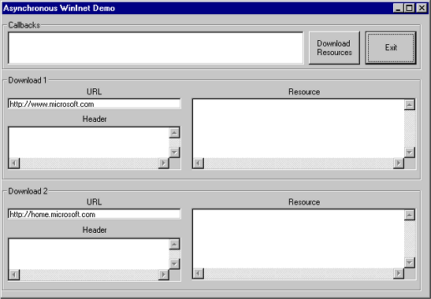

| ||||||
This tutorial describes how to handle multiple Internet requests using the Microsoft® Win32® Internet functions asynchronously.
The code from the AsyncDemo sample is used in this tutorial. AsyncDemo submits two Internet requests. The plain-text version of the resource and the returned headers are displayed in edit boxes.
Application developers who want to implement Win32 Internet functions asynchronously must have an understanding of C/C++ programming, a familiarity with Win32 programming, a familiarity with the Win32 Internet functions, and an understanding of status callback functions.
To compile programs using any of the Win32 Internet functions, make sure the Wininet.h header file is in the include directory and the Wininet.lib library file is in the library directory of the C/C++ compiler you are using.
The AsyncDemo sample is a Microsoft Windows®-based application that displays a dialog box with two buttons, a list box to hold the status callback information, and two sets of three edit boxes (one edit box for the URL, one edit box for the header information, and one edit box for the resource). The dialog box is defined in the Resource.rc file in the same directory as the sample code.
The following image shows the dialog box used by the AsyncDemo sample.

To implement the Win32 Internet functions asynchronously:
For asynchronous Internet requests, the Win32 Internet functions require the provision of a nonzero context value. The context value provides a way for your status callback function to track what request the status callback is coming from, and it can be used to provide access to any resources it needs to process the callback.
A context value can be any variable that can be cast as a DWORD value. One possibility is to pass the address of a structure that contains the resources needed by your application.
In the AsyncDemo sample, the following structure is used as the context value.
typedef struct {
HWND hWindow; // main window handle
int nURL; // ID of the edit box with the URL
int nHeader; // ID of the edit box for the header info
int nResource; // ID of the edit box for the resource
HINTERNET hOpen; // HINTERNET handle created by InternetOpen
HINTERNET hResource; // HINTERNET handle created by InternetOpenUrl
char szMemo[512]; // string to store status memo
HANDLE hThread; // thread handle
DWORD dwThreadID; // thread ID
} REQUEST_CONTEXT;
Other than INTERNET_STATUS_REQUEST_COMPLETE, you have a choice of which status values to capture. If you want to display the progress of your requests, your application should capture all the status values. If you want to be able to stop downloads that are taking a long time, your application should capture the INTERNET_STATUS_HANDLE_CREATED callback, which includes the HINTERNET handle for the request in the lpbStatusInformation buffer.
For more details on status callback functions, see Creating Status Callback Functions.
The AsyncDemo sample captures all the callbacks and writes a string to a list box in the dialog box. For the INTERNET_STATUS_REQUEST_COMPLETE callbacks, the AsyncDemo sample creates a separate thread to take care of getting the header information and downloading the resource.
The following example is the callback function used in the AsyncDemo sample.
void __stdcall Juggler(HINTERNET hInternet,
DWORD dwContext,
DWORD dwInternetStatus,
LPVOID lpvStatusInformation,
DWORD dwStatusInformationLength)
{
REQUEST_CONTEXT *cpContext;
char szBuffer[256];
cpContext= (REQUEST_CONTEXT*)dwContext;
switch (dwInternetStatus)
{
case INTERNET_STATUS_CLOSING_CONNECTION:
// Write the callback information to the buffer.
sprintf(szBuffer,"%s: CLOSING_CONNECTION (%d)",
cpContext->szMemo, dwStatusInformationLength);
break;
case INTERNET_STATUS_CONNECTED_TO_SERVER:
// Write the callback information to the buffer.
sprintf(szBuffer,"%s: CONNECTED_TO_SERVER (%d)",
cpContext->szMemo, dwStatusInformationLength);
break;
case INTERNET_STATUS_CONNECTING_TO_SERVER:
// Write the callback information to the buffer.
sprintf(szBuffer,"%s: CONNECTING_TO_SERVER (%d)",
cpContext->szMemo, dwStatusInformationLength);
break;
case INTERNET_STATUS_CONNECTION_CLOSED:
// Write the callback information to the buffer.
sprintf(szBuffer,"%s: CONNECTION_CLOSED (%d)",
cpContext->szMemo, dwStatusInformationLength);
break;
case INTERNET_STATUS_HANDLE_CLOSING:
// Write the callback information to the buffer.
cpContext->szMemo, dwStatusInformationLength);
break;
case INTERNET_STATUS_HANDLE_CREATED:
// Write the callback information to the buffer.
sprintf(szBuffer,"%s: HANDLE_CREATED (%d)",
cpContext->szMemo, dwStatusInformationLength);
break;
case INTERNET_STATUS_INTERMEDIATE_RESPONSE:
// Write the callback information to the buffer.
sprintf(szBuffer,"%s: INTERMEDIATE_RESPONSE (%d)",
cpContext->szMemo, dwStatusInformationLength);
break;
case INTERNET_STATUS_NAME_RESOLVED:
// Write the callback information to the buffer.
sprintf(szBuffer,"%s: NAME_RESOLVED (%d)",
cpContext->szMemo, dwStatusInformationLength);
break;
case INTERNET_STATUS_RECEIVING_RESPONSE:
// Write the callback information to the buffer.
sprintf(szBuffer,"%s: RECEIVING_RESPONSE (%d)",
cpContext->szMemo, dwStatusInformationLength);
break;
case INTERNET_STATUS_RESPONSE_RECEIVED:
// Write the callback information to the buffer.
sprintf(szBuffer,"%s: RESPONSE_RECEIVED (%d)",
cpContext->szMemo, dwStatusInformationLength);
break;
case INTERNET_STATUS_REDIRECT:
// Write the callback information to the buffer.
sprintf(szBuffer,"%s: REDIRECT (%d)",
cpContext->szMemo, dwStatusInformationLength);
break;
case INTERNET_STATUS_REQUEST_COMPLETE:
// Check for errors.
if (LPINTERNET_ASYNC_RESULT(lpvStatusInformation)->dwError == 0)
{
// Check if the completed request is from AsyncDirect.
if (strcmp(cpContext->szMemo, "AsyncDirect"))
{
// Set the resource handle to the HINTERNET handle
// returned in the callback.
cpContext->hResource = HINTERNET(
LPINTERNET_ASYNC_RESULT(lpvStatusInformation)->dwResult);
// Write the callback information to the buffer.
sprintf(szBuffer,"%s: REQUEST_COMPLETE (%d)",
cpContext->szMemo, dwStatusInformationLength);
// Create a thread to handle the header and
// resource download.
cpContext->hThread = CreateThread(NULL, 0,
(LPTHREAD_START_ROUTINE)Threader,LPVOID(cpContext),
0,&cpContext->dwThreadID);
}
else
{
sprintf(szBuffer,"%s(%d): REQUEST_COMPLETE (%d)",
cpContext->szMemo,
cpContext->nURL, dwStatusInformationLength);
}
}
else
{
sprintf(szBuffer,
"%s: REQUEST_COMPLETE (%d) Error (%d) encountered",
cpContext->szMemo, dwStatusInformationLength,
GetLastError());
}
break;
case INTERNET_STATUS_REQUEST_SENT:
// Write the callback information to the buffer.
sprintf(szBuffer,"%s: REQUEST_SENT (%d)",
cpContext->szMemo, dwStatusInformationLength);
break;
case INTERNET_STATUS_RESOLVING_NAME:
// Write the callback information to the buffer.
sprintf(szBuffer,"%s: RESOLVING_NAME (%d)",
cpContext->szMemo, dwStatusInformationLength);
break;
case INTERNET_STATUS_SENDING_REQUEST:
// Write the callback information to the buffer.
sprintf(szBuffer,"%s: SENDING_REQUEST (%d)",
cpContext->szMemo, dwStatusInformationLength);
break;
case INTERNET_STATUS_STATE_CHANGE:
// Write the callback information to the buffer.
sprintf(szBuffer,"%s: STATE_CHANGE (%d)",
cpContext->szMemo, dwStatusInformationLength);
break;
default:
// Write the callback information to the buffer.
sprintf(szBuffer,"%s: Unknown: Status %d Given",
dwInternetStatus);
break;
}
// Add the callback information to the callback list box.
SendDlgItemMessage(cpContext->hWindow,IDC_CallbackList,
LB_ADDSTRING,0,(LPARAM)szBuffer);
}
To start an Internet session in asynchronous mode, call InternetOpen with the INTERNET_FLAG_ASYNC flag set.
The following example shows the call to InternetOpen from the WinMain function in the AsyncDemo sample.
HINTERNET hOpen // root HINTERNET handle
hOpen = InternetOpen(lpszAgent, INTERNET_OPEN_TYPE_PRECONFIG,
NULL, NULL, INTERNET_FLAG_ASYNC);
To set the status callback function on the HINTERNET handle that your application needs to receive status callbacks on, your application must call the InternetSetStatusCallback function. InternetSetStatusCallback takes the HINTERNET handle and the application's status callback function and returns INTERNET_STATUS_CALLBACK.
The following example demonstrates a call to InternetSetStatusCallback from the WinMain function in the AsyncDemo sample.
iscCallback = InternetSetStatusCallback(hOpen,
(INTERNET_STATUS_CALLBACK)Juggler);
Currently, the following Win32 Internet functions can be called asynchronously:
Note The FtpCreateDirectory, FtpRemoveDirectory, FtpSetCurrentDirectory, FtpGetCurrentDirectory, FtpDeleteFile, and FtpRenameFile functions use the context value provided in the call to the InternetConnect function.
For each function that is called asynchronously, your status callback function needs a way to detect which function was called and to determine what it should do with the request.
For simplicity, the AsyncDemo sample uses the InternetOpenUrl function to retrieve an Internet resource. Since InternetOpenUrl is the only Win32 Internet function that the AsyncDemo sample is calling asynchronously, the sample does not need to track calls by other functions (such as InternetConnect).
The following example shows the call to InternetOpenUrl from the AsyncDirect function in the AsyncDemo sample.
prcContext->hResource = InternetOpenUrl(hOpen, szURL,
NULL, 0, 0, (DWORD)&test);
The following topics relate to the asynchronous implementation of the Win32 Internet functions.
Did you find this topic useful? Suggestions for other topics? Write us!
© 1999 Microsoft Corporation. All rights reserved. Terms of use.